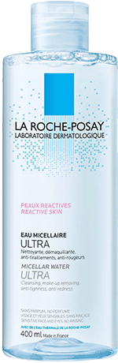
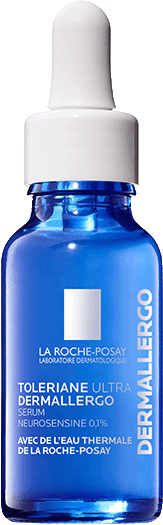
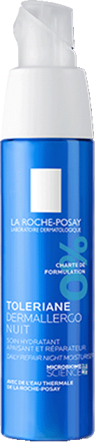

REGENERUJĄCA
PIELĘGNACJA
NAWILŻAJĄCA
NA NOC
dla skóry wrażliwej
i skłonnej do alergii
TOLERIANE DERMALLERGO noc
Unikalna formuła wspiera równowagę mikrobiomu skóry oraz wzmacnia barierę ochronną, aby pomagać chronić skórę przed wnikaniem alergenów z zewnątrz. Minimalizuje uczucie dyskomfortu w nocy, dzięki czemu pozwala na lepszy sen.

Natychmiastowe
ukojenie
Przeciw
PODRAŻNIENIOM
Przeciw
zaczerwienieniom
OnawilŻa
do 48h1
1Test instrumentalny
0% zapachu
0% alkoholu2
2Substancji zapachowych,
alkoholu etylowego
REGENERUJE
I WZMACNIA BARIERĘ
OCHRONNĄ SKÓRY
Ultra hermetyczne opakowanie zabezpiecza formułę przed: zanieczyszczeniem, utlenieniem, pozostałościom na aplikatorze.
Hipoalerigczny. Niekomedogenny.
Testowany na skórze skłonnej do alergii pod kontrolą dermatologiczną i okulistyczną.
składniki aktywne
Unikalny ekstrakt z bakterii pozyskiwany z wody termalnej La Roche-Posay. Wspiera mikrobiom skóry, wzmacnia funkcję bariery ochronnej i działa przeciwzapalnie
O właściwościach kojących i przeciwzapalnych
Znane z właściwości przywracania hydrolipidowej warstwy skóry.
Znany z zapobiegania nadmiernej utraty wody z naskórka.
O właściwościach antyoksydacyjnych.
Znany z właściwości kojących, pomaga zmniejszać podrażnienia i zaczerwienienia skóry.
O właściwościach kojących, łagodzących i pomagających zmniejszyć reaktywność skóry.
SPOSÓB UŻYCIA
Stosuj codziennie wieczorem na twarz
i okolice oczu oraz szyję.
rutyna pielęgnacyjna
1
PŁYN MICELARNY
ULTRA
Do skóry bardzo wrażliwej i reaktywnej. Oczyszcza skórę z makijażu i zanieczyszczeń. Dodatkowo nawilża skórę i redukuje uczucie ściągnięcia i zaczerwienienia.
Dowiedz się więcej2
toleriane ultra dermallergo
kojące serum nawilżające
Dzienna dawka wzmocnienia i ukojenia. Przywraca skórze komfort i wspiera odbudowę jej bariery ochronnej.
Dowiedz się więcej3
toleriane dermallergo
krem na noc
Wspiera równowagę mikrobiomu skóry oraz wzmacnia barierę ochronną. Redukuje zaczerwienienia i uczucie dyskomfortu skóry.
Dowiedz się więcejzobowiązania la roche-posay

100% produktów przebadanych pod kątem wywołania alergii
tylko kluczowe składniki aktywne w optymalnym stężeniu
formuły odporne na upływ czasu

przeBadane na skórze bardzo wrażliwej